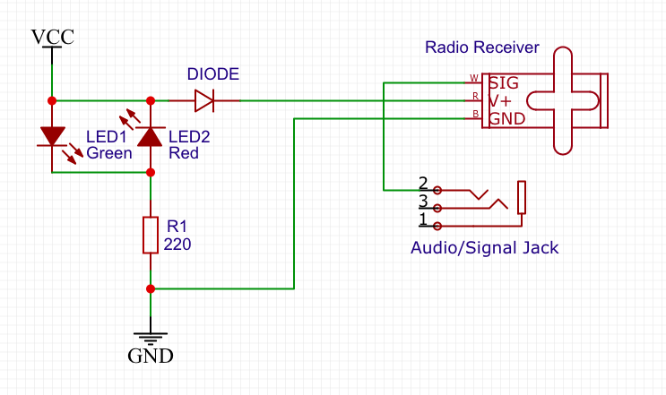
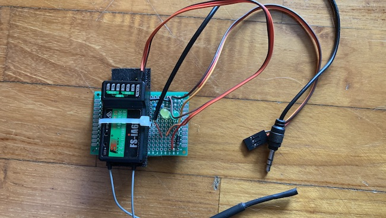

L’adattatore trainer per radio FrSky è un semplice circuito che ho progettato per usare una ricevente FlySky con uscita PPM come input per la funzione trainer del mio radiocomando FrSky. Il circuito consiste in un diodo di protezione per l’inversione di polarità, due LED con una resistenza in serie che confermano o meno il corretto inserimento del cavo di alimentazione e poi i collegamenti tra input/output PPM e le relative alimentazioni. Il circuito si interfaccia con la radio tramite un jack 3,5 mm e un cavo servo per l’alimentazione, mentre si collega alla ricevente con un solo cavo servo che trasporta segnale e alimentazione.  
Questo progetto è un server di ricezione e decodifica di dati ADS-B dagli aerei. A livello hardware è formato da un Raspberry Pi 3 con relativa microSD, un case con ventola, una chiavetta SDR con relativa antenna per la ricezione dei dati e ovviamente un alimentatore 5V 2,5A. Il programma che riceve e decodifica i pacchetti ADS-B permette la visualizzazione dei dati ricevuti su un sito web locale. Ho reso l’interfaccia grafica web accessibile anche da remoto tramite un DDNS (DNS dinamico) impostato sul router. Ho poi configurato il router per reindirizzare la porta pubblica 80 (utilizzata dal protocollo http) al Raspberry Pi sulla porta locale 8080 su cui è possibile visualizzare il sito. In questo modo dall’esterno è possibile accedere solo ed esclusivamente al sito web che risiede sul Raspberry Pi inserendo nome utente e password impostati in un file di configurazione. L’installazione e l’impostazione dell’esecuzione automatica del programma sono eseguite via terminale (in questo caso per comodità ho usato una connessione SSH dal mio pc al Raspberry), mentre l’impostazione del DDNS e l’apertura delle porte sono eseguite tramite l’interfaccia grafica del router. Io ho usato il metodo del DDNS per un determinato programma, ma cambiando l’associazione delle porte lo si può usare anche per accedere ad altri servizi, come per esempio server SSH (porta 22), FTP (porte 20 e 21) ecc.